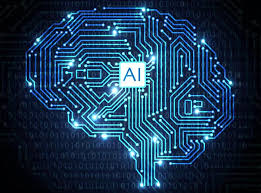

When most people hear the term artificial intelligence, the first thing they usually think of is robots. That's because big-budget films and novels weave stories about human-like machines that wreak havoc on Earth. But nothing could be further from the truth.
Artificial intelligence is based on the principle that human intelligence can be defined in a way that a machine can easily mimic it and execute tasks, from the most simple to those that are even more complex. The goals of artificial intelligence include learning, reasoning, and perception.
As technology advances, previous benchmarks that defined artificial intelligence become outdated. For example, machines that calculate basic functions or recognize text through optimal character recognition are no longer considered to embody artificial intelligence, since this function is now taken for granted as an inherent computer function.
AI is continuously evolving to benefit many different industries. Machines are wired using a cross-disciplinary approach based in mathematics, computer science, linguistics, psychology, and more.